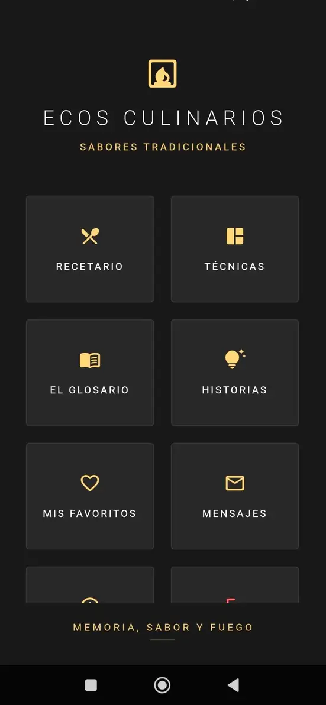
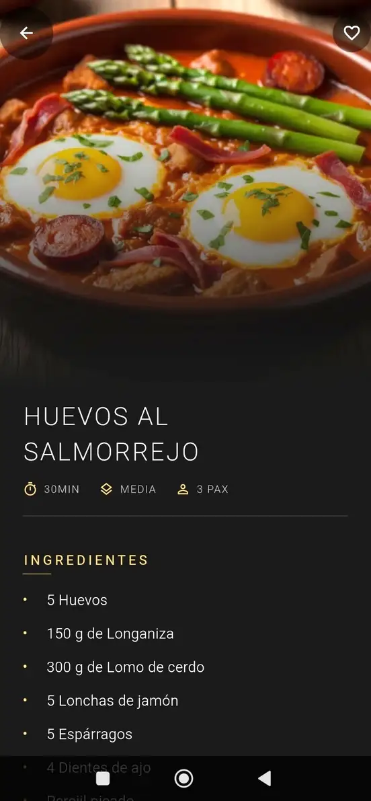
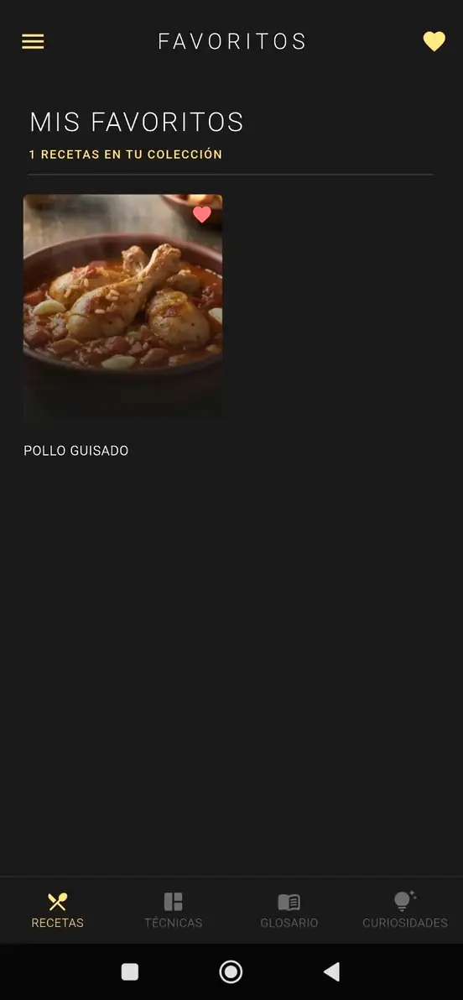
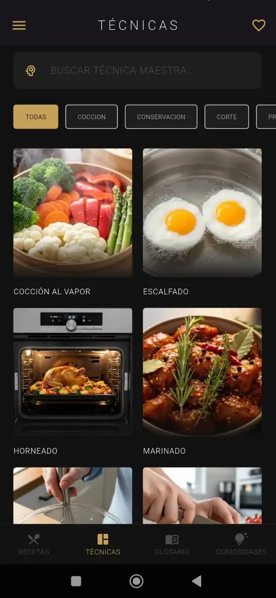
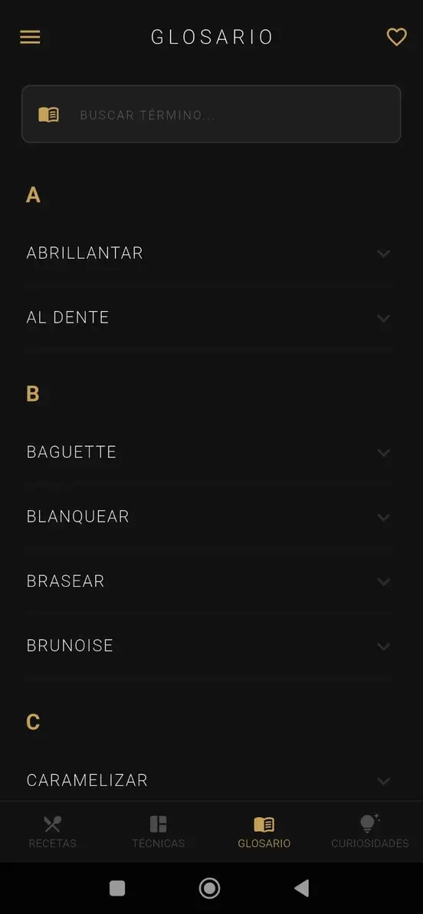

🍳
Ecos Culinarios
Nuestras recetas, de la encimera al código.
📖 La historia detrás
Todo empezó con una promesa a mi mujer: dejar de perder recetas en papeles sueltos y notas del móvil. Ecos Culinarios nació para poner orden en nuestra cocina.
Lo que empezó como un proyecto personal acabó siendo algo que queremos compartir con cualquiera que disfrute cocinando sin complicaciones.
En la App encontrarás:
📖
Recetario Digital
Paso a paso sin distracciones.
⭐
Favoritos
Tus platos "estrella" siempre a mano.
💡
Técnicas
Esos trucos que marcan la diferencia.





Instalar aplicación
Descargar APK Directo
✅ Software libre de publicidad y rastreadores